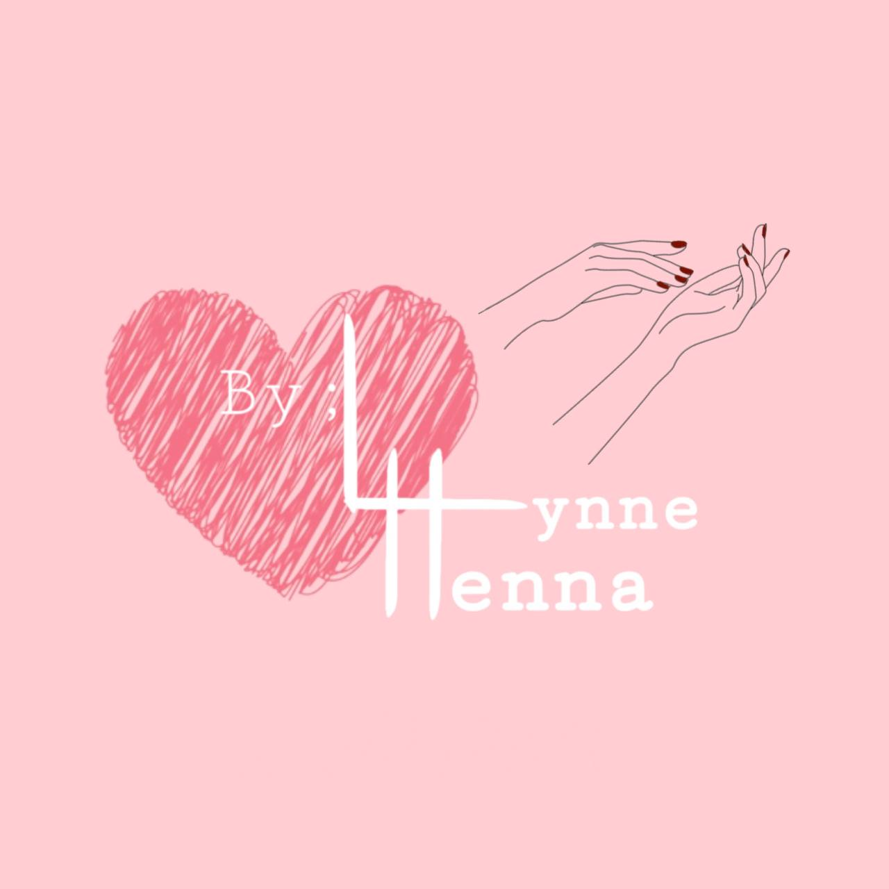
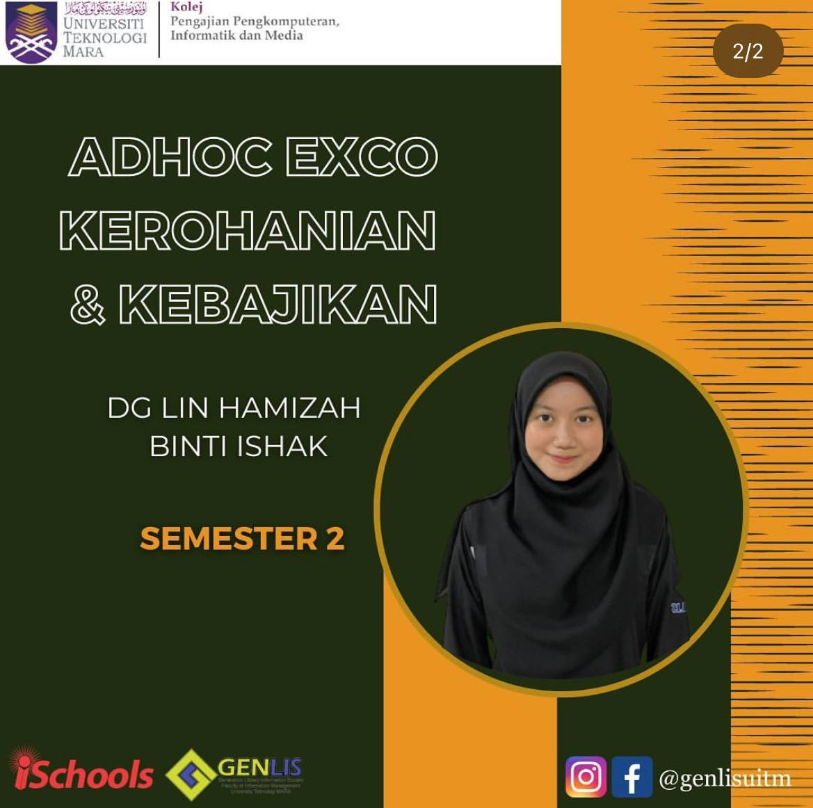

My Experience 🌼
For my experience, I will explain about my experience after I finished my STPM, and my journey during my degree
Owning A Business 🌷
After I finished my STPM, I decided to start my own business which is LynneHenna. This business is selling beauty cosmetics which is henna. I decided to sell it because my peers especially the girls love to wear it especially during eid or on daily day


I gain so much customer with a lot of good feedbacks 😊

My Experience during Degree journey🥇


During my semester 2 in University, I took part in society club in my University named Generation Library Information Society(GenLis) I started with joining an interview on May 2023


Then, I pass the interview and I took part as an adhoc for Exco of Spiritual and Welfare. And on the next Semester I was appointed as The Head of Exco of Special Duties


I had a very fun experience after joined this club. It also teach me a lot such have to have a strong communication skills, good time management and a professional leadership. The people in this club also supportive and kind. I also feel like they were second family for me. This club also teach me good professional way of works. For example, they always give chance to us for conduct a programme and being the director. So, we need to deal with a lot of people that have a high position. This thing is actually important because it will give me an experience that I could bring to working life.